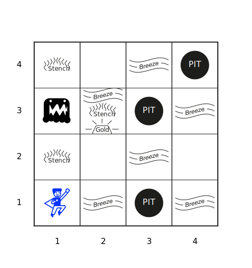
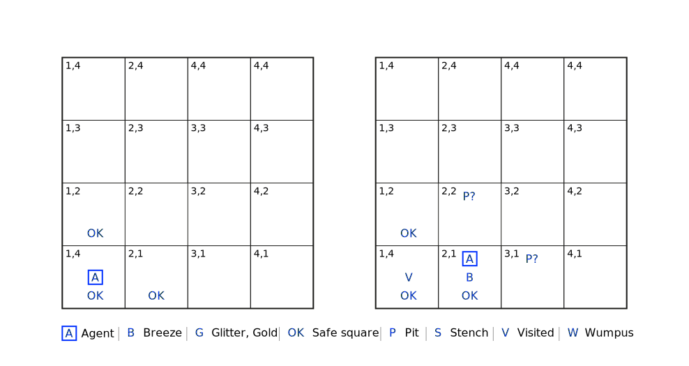
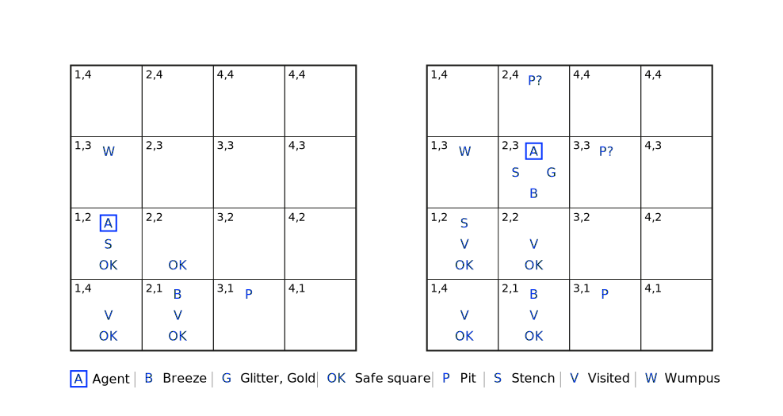

Logical Agents
🧠 Introduction to AI — I2AI_5
Andy Weeger
University of Applied Sciences Neu-Ulm
Logical agents
Search limitations
The problem-solving agents based on search algorithms know things, but only in a very limited, inflexible sense (Russel and Norvig 2022, 226):
- They know what actions are available (\(ACTIONS(s)\)) and what the result of performing a specific action from a speicifc state will be (\(RESULT(s,a)\)). But they don’t know general facts.
- Using atomic represtations, representing knowledge about the environment (i.e., the state space) requires to list all possible concrete states
- The goal can formally only be described as an explicit set of states
Think rationally
Until now, the focus has been on agents that act rationally. Often, however, rational action requires rational (logical) thought on the agent’s part.
To this end, relevant aspects of the environment must be represented in a knowledge base (KB), composed of sentences in knowledge reprensentation language (e.g., logic)
- Each sentences represents some assertion about the world (semantics)
- The sentences themselves have a causal influence on the agent’s behaviour in a way that is correlated with the contents of the sentences (syntax)
- Interaction with the KB through \(ASK\) and \(TELL\) operations (simplified)
- \(ASK\): asks the KB what action it should perform
- \(TELL\): tells the knowledge base what it perceives
Knowledge-based agents
A knowledge-based agent uses its knowledge base to
- represent its background knowledge,
- store its observations (i.e., percepts),
- derive actions, and
- store its executed actions.
The Wumpus World
The example is taken from Russel and Norvig (2022)
Introduction
The wumpus world is an environment in which knowledge-based agents can show their worth.
- A cave consisting of rooms connected by passageways
- Wumpus is in one room. It eats anyone who enters its room
- The wumpus can be shut by an agent, but the agent only has one arrow
- Some rooms contain bottomless pits
- The goal is to survive, to find a heap of gold and to leave the cave
PEAS
Performance measure
- +1,000 for finding the gold
- -1,000 for dying (falling into a pit or being eaten by the wumpus)
- -1 for each action taken
- -10 for using the arrow
- The game ends either when the agents dies or finds the gold
Environment
- 4 x 4 grid with walls surrounding the grid
- The agent alsoways starts in \([1,1]\)
- The locations of gold and wumpus are chosen randomly (other than \([1,1]\))
- Each square other than \([1,1]\) can be a pit, with probability .2
- There is a ladder to leave the cave in square \([1,1]\)
Actuators
- Move (Go forward, turn right by 90°, turn left by 90°)
- Grab (pick up an object in the same square)
- Shoot (there is only one arrow)
- Leave the cave (only works in square \([1,1]\)).
Sensors
- The agent cannot perceive its own location
- In the square containing the wumpus and in the directly adjacent squares, the agent perceives a stench
- In the squares adjacent to a pit, the agent perceives a breeze
- In the square where the gold is, the agent perceives a glitter
- When the agent walks into a wall, it perceives a bump
- When the wumpus is killed, its scream is heard everywhere
Percepts are represented as a 5-tuple, e.g., [Stench, Breeze, Glitter, None, None]
A sample configuration

A typical wumpos world
- The agent is in the bottom left corner \([1,1]\), facing east (rightward)
- There are three pits in the world (\([4,4]\),\([3,3]\), and \([3,1]\))
- Wumpus is in room \([1,3]\)
- The gold is in room \([2,3]\)
Exploration

The wumpus is in [1,3].

Propositional logic
Basic syntax
Propositions are the building blocks of propositional logic.
Atomic sentences consist of a single proposition symbol, that stands for a proposition, that can be \(true\) or \(false\), e.g.,
- \(BlockRed\) — The block is red
- \(W_{1,3}\) — The wumpus is in \([1,3]\)
The logical connectives and (\(\land\)), or (\(\lor\)), not (\(\neg\)), implies (\(\implies\)), and if and only if (\(\iff\)) can be used to build complex sentences.
Operator precedence: \(\neg, \land, \lor, \implies, \iff\) (use brackets when necessary)
Basic semantics
Atomic propositions can be \(true\) or \(false\).
The truth of a formula follows from the truth of its atomic propositions (truth assignment or interpretation) and the connectives.
Examples:
- \((P \lor Q) \land R\)
- If P and Q are false and R is true, the formula is false
- If P and R are true, the formula is true regardless of what Q is
- \(B_{1,2} \iff (P_{1,2} \lor P_{2,1})\)
- A square is breezy if a neighboring square has a pit,
and a square is breezy only if a neighboring square has a pit
- A square is breezy if a neighboring square has a pit,
A simple KB
Symbols
If we focus on the immutable aspects of the wumpus world, we need the following symbols for each \([x,y]\) location
- \(P_{x,y}\) is true if there is a pit in \([x,y]\)
- \(W_{x,y}\) is true if there is a wumpus in \([x,y]\), dead or alive
- \(B_{x,y}\) is true if there is a breeze in \([x,y]\)
- \(S_{x,y}\) is true if there is a stench in \([x,y]\)
- \(L_{x,y}\) is true if the agent is in location \([x,y]\)
Sentences
Following sentences1 will suffice to derive \(\neg P_{1,2}\) (there is no pit in [1,2]):
- \(R_1: \neg P_{1,1}\)
- \(R_2: B_{1,1} \iff (P_{1,1} \lor P_{2,1})\)
- \(R_2: B_{2,1} \iff (P_{1,1} \lor P_{2,2} \lor P_{3,1})\)
- \(R_1: \neg B_{1,1}\)
- \(R_5: B_{2,1}\)
The sentences reflect the situation depicted in Figure 2 where the agent has moved to \([2,1]\) and perceiving \([None,Breeze,None,None,None]\)
A simple inference
Our goal is to decide wether \(KB \models \alpha\) 2 for some sentence \(\alpha\), e.g. is \(\neg P_{1,2}\) entailed by our \(KB\) (and, thus, a safe place to move)?
Model checking enumerates all possible models to check that \(\alpha\) is true in every model in which \(KB\) is true3
Example (the agent has just moved to \([2,1]\)):
- In the current KB there are 27 = 128 possible models
- In three of these models, \(\neg P_{1,2}\) is true
- Only two of the three models, \(P_{2,2}\) is true
- So we cannot yet tell wether there is a pit in \([2,2]\)
Propositional theorem proving
Introduction
Entailment can not only be determined by model checking, it can also be done by theorem proving.
Theorem proving means applying rules of inference directly to the sentences in the knowledge base to construct a proof of the desired sentence without consulting models.
For large number of models and short length of proofs, theorem proving can be more efficient than model checking.
Additional concepts
Some additional concepts are needed to plug into the details:
- Logical equivalence: two sentences \(\alpha\) and \(\beta\) are logically equivalent if they are true in the same set of models4 (\(\alpha \equiv \beta\) 5)
- Validity: a sentence is valid if it is true in all models (e.g., \(P \lor \neg P\))6
- Deduction theorem: for any sentences \(\alpha\) and \(\beta\), \(\alpha \models \beta\) if and only if the sentence \((\alpha \implies \beta)\) is valid. 7
- Satisfiability: a sentence is satisfiable if it is true in, or satisfied by, some model8
- Validity and satisfiability are connected:
\(\alpha \models \beta\) if and only if the sentence \((\alpha \land \neg \beta)\) is unsatisfiable9 - Proof by contradiction: assuming a sentence \(\beta\) to be false, which leads to a contradiction with known axioms \(\alpha\) – \((\alpha \land \neg \beta)\) is unsatisfiable
Standard logical equivalences
The symbols \(\alpha\), \(\beta\), and \(\gamma\) stand for arbitrary sentences of propositional logic
- \((\alpha \land \beta) \equiv (\beta \land \alpha)\) — commutativity of \(\land\)
- \((\alpha \lor \beta) \equiv (\beta \lor \alpha)\) — commutativity of \(\lor\)
- \(((\alpha \land \beta) \land \gamma) \equiv (\alpha \land (\beta \land \gamma))\) — associativity of \(\land\)
- \(((\alpha \lor \beta) \lor \gamma) \equiv (\alpha \lor (\beta \lor \gamma))\) — associativity of \(\lor\)
- \(\neg(\neg\alpha) \equiv \alpha\) — double negation elimination
- \((\alpha \implies \beta) \equiv (\neg \beta \implies \neg \alpha)\) — contraposition
- \((\alpha \implies \beta) \equiv (\neg \alpha \lor \beta)\) — implication elimination
- \((\alpha \iff \beta) \equiv ((\alpha \implies \beta) \land (\beta \implies \alpha))\) — biconditional elimination
- \(\neg(\alpha \land \beta) \equiv (\neg \alpha \lor \neg \beta)\) — De Morgan
- \(\neg(\alpha \lor \beta) \equiv (\neg \alpha \land \neg \beta)\) — De Morgan
- \((\alpha \land (\beta \lor \gamma)) \equiv ((\alpha \land \beta) \lor (\alpha \land \gamma))\) — distributivity of \(\land\) over \(\lor\)
- \((\alpha \lor (\beta \land \gamma)) \equiv ((\alpha \lor \beta) \land (\alpha \lor \gamma))\) — distributivity of \(\lor\) over \(\land\)
Inference rules
Following inference rules10 can be used in any particular instances where they apply, generating sound inferences without the need for enumerating models:
- Modus Ponens11: \(\frac{\alpha \implies \beta, \alpha}{\beta}\)
The sentence \(\beta\) can be inferred, whenever sentences of the form \(\alpha \implies \beta\) and \(\alpha\) are given - And-Elimination: \(\frac{\alpha \land \beta}{\beta}\) From a conjunction, any of the conjuncts can be inferred
All of the logical equivalences can be used as inference rules
Example
We start with the knowledge base containing \(R_1\) throught \(R_5\) and show to prove \(\neg P_{1,2}\)
- Apply biconditional elimination to \(R_2\) to obtain
\(R_6 : (B_{1,1} \implies (P_{1,2} \lor P_{2,1})) \land ((P_{1,2} \lor P_{2,1}) \implies B_{1,1})\) - Apply And-Elimination to \(R_6\) to obtain
\(R_7 : ((P_{1,2} \lor P_{2,1}) \implies B_{1,1})\) - Logical equivalence for contrapositives gives \(R_8 : (\neg (P_{1,2} \lor P_{2,1}) \implies \neg B_{1,1})\)
- Apply Modus Ponens with \(R_8\) and the percept \(R_4\) (i.e., \(\neg B_{1,1}\)) to obtain
\(R_9 : \neg (P_{1,2} \lor P_{2,1})\) - Apply De Morgan’s rule, giving the conclusion
\(R_{10} : \neg P_{1,2} \land P_{2,1}\) (neither \([1,2]\) nor \([2,1]\) contains a pit)
Search algorithms
Search algorithms can be used to find a sequence of steps that constitutes a proof.
The proof problem is defined as follows:
- Initial state: the initial knowledge database
- Actions: all the inference rules applied to all the sentences that match the upper half of the inference rule
- Result: add the sentence in the lower half of the inference rule to the knowledge base
- Goal: a state that contains the sentence we are trying to prove
Open topics
- Completeness (if the available inference rules are inadequate, the goal is not reachable)
- Level of complexity (though propositional logic suffices to represent the wumpus world), e.g.,
- Rules must be set up for each square
- We need a time index for each proposition that refer to an aspect of the world that changes (further expansion of the rule set)
- Efficiency of inference algorithms
- …
For further information on these and other matters, please see Russel and Norvig (2022)
Wrap-up
Summary
- Rational agents require knowledge of their world to make rational decisions
- With the help of a (knowledge) representation language, this knowledge is represented and stored in a knowledge base in the form of sentences
- A representation language is defined by its syntax12 and its semantics13
- Inference is the process of deriving new sentences from old ones
- Propositional logic is a simple representation language consisting of propositions symbols and logical connectives
- Solutions can be found by enumerating models (model-checking) or inference and proofs using inference rules14
- Propositional logic does not scale to environments of unbounded size15
xkcd

✏️ Exercises
I2AI_5 E1
Explain in your own words the following terms:
Literature
Footnotes
We label each sentence \(R_i\) so that we can refer to them
\(KB \models \alpha\) menas that \(KB\) does entail \(\alpha\) (a sentence \(\alpha\) follows logically from \(KB\))
In mathematical notation, we write \(M(KB) \subseteq M(\alpha)\)
An alternative definition of equivalence is as follows: any two sentences \(\alpha\) and $are equivalent if and only if each of them entails the other: \(\alpha \equiv \beta\) if and only if \(\alpha \models \beta\) and \(\beta \models \alpha\)
Note that \(\equiv\) is used to make claims about sentences, while \(\iff\) is used as part of a sentence
Valid sentences ar also known as tautologies, they are necessarily true
Thus, the theorem states that every valid implication sentence describes a legitimate inference
The knowledge database given earlier (\(R_1 \land R_2 \land R_3 \land R_4 \land R_5\)) is satisfiable because there are thrree models in which it is true.
\(\alpha\) is valid iff \(\neg \alpha\) is unsatisfiable; contrapositively, \(\alpha\) is satisfiable iff \(\neg \alpha\) is not valid.
One or two statements at the upper half of the inference rule imply the statement on the lower half
Latin for mode that affirms
Specifies the structure of sentences
Defines the truth of each sentence in each possible world or model
Search algorithms can be used to find solutions
Propositional logic lacks the expressive power to deal concisely with time, space, and universal patterns of relationships among objects.